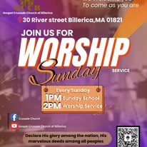
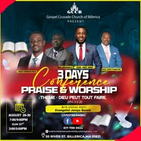

Tech1
Media Team · Ekip Medya
Adorasyon & Mizik
Behind the scenes of our praise — the teams that bring worship to life every Sunday.
Dèyè sèn adorasyon nou an — ekip ki bay adorasyon lavi chak Dimanch.
Media Team · Ekip Medya
Media Team · Ekip Medya
Media Team · Ekip Medya
Guitar · Gita
Drum · Tanbou
Sound / Keys · Son / Klav
Keys / Bass · Klav / Bas
Join us every Sunday at 1:00 PM · Vin jwenn nou chak Dimanch a 1:00 PM

Every Sunday · Chak Dimanch — 1:00 PM – 3:00 PM
Join us for service, prayer and worship.
Vin jwenn nou pou sèvis, lapriyè ak adorasyon.
TBD · A detèmine
Stay connected wherever you are.
Rete konekte kèlkeswa kote ou ye.

3-Day Conference · Konferans 3 Jou
A powerful time of worship and teaching.
Yon moman pwisan adorasyon ak ansèyman.
Every Sunday at 1:00 PM · Chak Dimanch a 1:00 PM